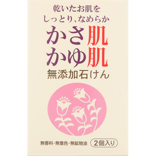
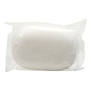

返回列表
产品名称：ＭＫ かさ肌かゆ肌せっけん

ヒラマツ商事 ＭＫ かさ肌かゆ肌せっけん １００ｇｘ２個組
メーカー ヒラマツ商事
JANコード 4977545314564
商品の特徴
○乾いて、かゆいお肌をしっとり、なめらかに洗います。
○無香料・無着色・無鉱物油（防腐剤は含んでおりません）
成分・分量
＜全成分＞
石ケン素地、水、パーム核油、トコフェロール、EDTA-4Na、エチドロン酸4Na、酸化チタン、グリチルリチン酸2K
用法及び用量
＜使用方法＞
適量を水かぬるま湯で軽く泡立ててからお使いください。その後、洗い流してください。